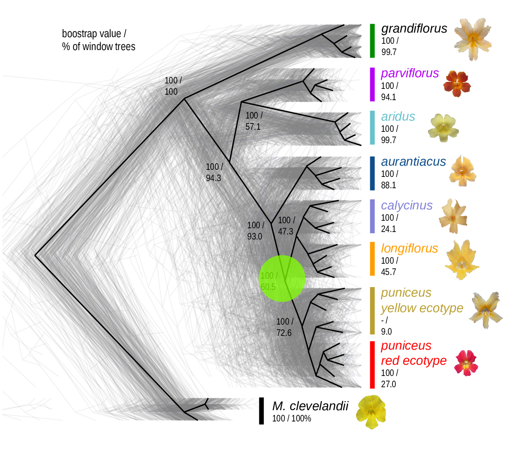
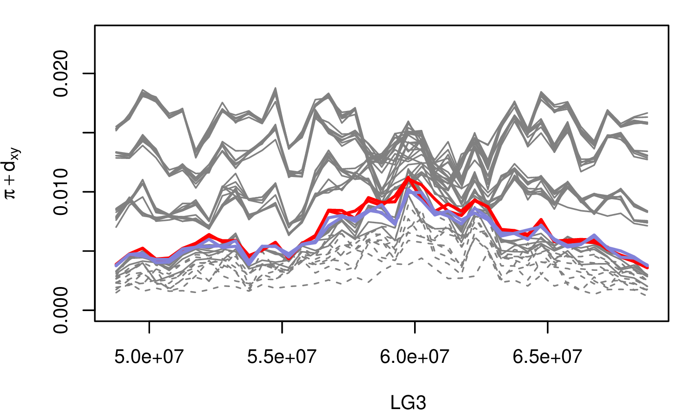

Landscapes in population genetics:
ecology, evolution, conservation, and simulation
Program in Ecology, Evolution & Conservation Biology
UIUC // 3 February 2021
G6PD deficiency allele frequencies

Human G6PD variants (Howes et al 2013)
- over 130 G6PD deficiency alleles; 34 variants at high frequency
- provide protection against malaria but increase risk of anemia
- Estimated ages 40-400 generations

- Dark-pigmented mammals and reptiles on volcanic outcrops in the Southwest. (Dice, Benson 1936)
- ‘Dark’ allele beneficial on outcrops, deleterious elsewhere.
- MC1R: basis is shared between species but not between populations (Nachman, Hoekstra)
“isolation by distance”

by CJ Battey

Diversity correlates with recombination rate

Hudson 1994; Cutter & Payseur 2013; Corbett-Detig et al 2015
- linked selection
The indirect effects of selection on genomic locations that are linked to the sites under selection by a lack of recombination.


The Mimulus aurantiacus species complex


From Widespread selection and gene flow shape the genomic landscape during a radiation of monkeyflowers, Stankowski, Chase, Fuiten, Rodrigues, Ralph, and Streisfeld; PLoS Bio 2019.






Ok, then: selection.
But: what kind of selection?
- newly adaptive variants?
- purifying selection?
- local adaptation?
- selection for introgression?

History is a sequence of trees
For a set of sampled chromosomes, at each position along the genome there is a genealogical tree that says how they are related.


Kelleher, Etheridge, and McVean introduced the tree sequence data structure for a fast coalescent simulator, msprime.
stores sequence and genealogical data very efficiently
tree-based sequence storage closely related to haplotype-matching compression
tskit: python/C tools

jerome kelleher
File sizes

from Kelleher et al 2018, Inferring whole-genome histories in large population datasets, Nature Genetics
Computation run time

from Ralph, Thornton and Kelleher 2019, Efficiently summarizing relationships in large samples
The main idea
If we record the tree sequence that relates everyone to everyone else,
after the simulation is over we can put neutral mutations down on the trees.
Since neutral mutations don’t affect demography,
this is equivalent to having kept track of them throughout.
From Kelleher, Thornton, Ashander, and Ralph 2018, Efficient pedigree recording for fast population genetics simulation.
and Haller, Galloway, Kelleher, Messer, and Ralph 2018, Tree‐sequence recording in SLiM opens new horizons for forward‐time simulation of whole genomes


A 100x speedup!

The data
Simulations
\(N=10,000\) diploids
burn-in for \(10N\) generations
population split, with either:
- neutral
- background selection
- selection against introgressed alleles
- positive selection
- local adaptation

Murillo Rodrigues

From Widespread selection and gene flow shape the genomic landscape during a radiation of monkeyflowers, Stankowski, Chase, Fuiten, Rodrigues, Ralph, and Streisfeld; PLoS Bio 2019.
Other uses for population simulation
train inference methods
predict management outcomes
do power analyses
develop intuition